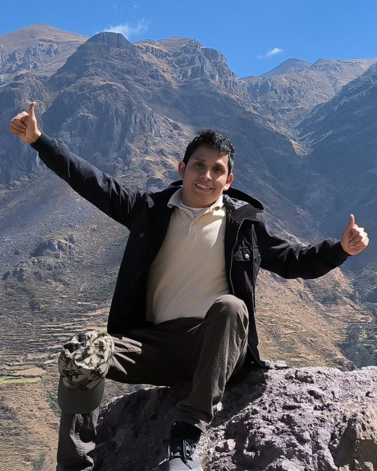

Coaching ontológico en línea
¿Qué cambiaría si miraras tu situación con otros ojos?
No vemos las cosas como son, sino como somos. En cada sesión te acompaño a observar desde otro lugar, conversar distinto y dar un paso concreto. Las respuestas no las traigo yo: ya están en ti.

Hola, soy David Romaní
Soy coach en formación. Llevo cinco de los diez meses de mi programa y ofrezco sesiones de práctica a personas que quieren avanzar en algo importante para ellas: una conversación pendiente, una decisión, una relación de trabajo que se tensó, un proyecto que no termina de arrancar.
En esta formación aprendí que la manera en que observamos define lo que creemos posible. Por eso, más que darte consejos, te hago preguntas que abren nuevas posibilidades, y cerramos cada sesión con un compromiso que tú eliges.
Formación en curso: 5 de 10 meses. Sesiones individuales por Google Meet.
Qué es el coaching
El coaching es una conversación que te ayuda a pasar de donde estás a donde quieres estar. No te digo qué hacer: te acompaño a ver tu situación con más claridad, para que decidas y actúes.
Cuando algo no funciona, solemos buscar otras acciones. El coaching ontológico propone un paso previo: revisar al observador que eres, es decir, tus interpretaciones, tus emociones y tus conversaciones, porque de ahí nacen tus acciones y tus resultados.
En qué se diferencia de otras ayudas
- Terapia
- Trabaja el pasado y la salud emocional. El coaching se enfoca en el presente y en tus próximos pasos. Si estás pasando por un momento difícil, la terapia es el mejor lugar.
- Consultoría
- El consultor te da la respuesta. En coaching, la respuesta la construyes tú, porque nadie conoce tu situación mejor que tú.
- Mentoría
- El mentor comparte su experiencia en un campo. El coach no necesita ser experto en tu tema; su especialidad es la conversación.
Temas que podemos trabajar
- Conversaciones difíciles o pendientes
- Relaciones y coordinación en el trabajo
- Decisiones de carrera
- Pasar de la queja a la acción
- Compromisos que cuesta cumplir
- Emociones que te frenan
Mi enfoque
Mi formación se apoya en tres autores. Cada uno aporta algo concreto a la manera en que conversamos en una sesión.
-
La empresa consciente
La responsabilidad incondicional: dejar de preguntarnos quién tiene la culpa y empezar a preguntarnos qué podemos hacer nosotros. También distinguir los hechos de nuestras interpretaciones y cuidar la integridad de lo que prometemos.
En la sesión: te invito a pasar de víctima a protagonista de tu situación, sin juzgarte.
-
Comunicación no violenta
Escuchar lo que hay detrás de las palabras. Rosenberg propone conversar a partir de cuatro elementos: lo que observamos, lo que sentimos, lo que necesitamos y lo que pedimos.
En la sesión: te escucho sin juicio y te ayudo a preparar conversaciones difíciles desde la claridad y no desde el reproche.
-
Coaching: el arte de soplar las brasas
El coach no trae el fuego: ayuda a avivar las brasas que ya están en la persona. Trabaja con el observador que somos, a través del lenguaje, las emociones y el cuerpo.
En la sesión: confío en que tienes los recursos; mi trabajo es hacer las preguntas que los despierten.
Si alguna de estas ideas resuena contigo, te invito a comprobarlo en tu propia experiencia. Reserva una sesión.
Cómo funciona
-
Reservas un horario
Eliges el día y la hora en mi agenda y respondes unas preguntas breves sobre lo que te gustaría trabajar. Recibes la confirmación y el enlace de Google Meet en tu correo.
-
Definimos lo que quieres lograr
Al inicio acordamos qué quieres llevarte de la conversación. Ese objetivo guía todo lo demás.
-
Conversamos y observamos
Exploramos la situación, cómo la estás interpretando y qué emociones aparecen. Muchas veces el cambio empieza cuando cambia la mirada.
-
Asumes un compromiso
Cerramos con una acción concreta que tú eliges, con fecha. Si quieres, agendamos otra sesión para revisar cómo te fue.
- Duración
- 60 minutos
- Modalidad
- En línea, por Google Meet
- Costo
- Sin costo durante mi formación
- Confidencialidad
- Lo que conversamos queda entre nosotros
Reserva tu sesión
Elige un horario disponible. Al reservar te haré unas preguntas breves para llegar con contexto a nuestra conversación. Recibirás la confirmación y el enlace de Google Meet en tu correo. Los horarios se muestran en tu zona horaria.
¿No se ve la agenda? Ábrela en una pestaña nueva.
Preguntas frecuentes
¿Por qué son sesiones de práctica?
Estoy a mitad de mi formación como coach y necesito horas de práctica con personas reales. Para ti son sesiones completas y serias, sin costo. Para mí, la oportunidad de aprender contigo.
¿Qué es el coaching ontológico?
Es una corriente del coaching que entiende a la persona como un ser de lenguaje, emoción y cuerpo. Parte de la idea de que cada uno observa el mundo de una manera particular, y que al ampliar esa mirada aparecen acciones que antes no parecían posibles.
¿Necesito preparar algo?
Solo pensar en qué tema te gustaría trabajar. Si no lo tienes claro, también podemos usar la primera parte de la sesión para definirlo.
¿Cuántas sesiones necesito?
Una sola sesión ya puede darte claridad sobre algo puntual. Para objetivos más grandes, un proceso de 4 a 6 sesiones suele funcionar bien. Tú decides.
¿Qué pasa si no puedo asistir?
Puedes cancelar o reprogramar desde el correo de confirmación. Te agradezco que avises con al menos 24 horas de anticipación.
¿El coaching reemplaza a la terapia?
No. Si estás atravesando ansiedad, depresión u otra dificultad emocional importante, te recomiendo buscar a un profesional de la salud mental. Con gusto lo conversamos si no estás seguro.